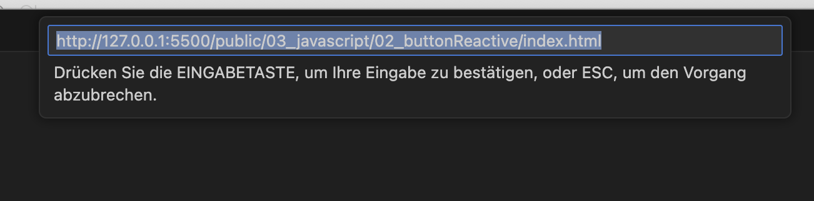
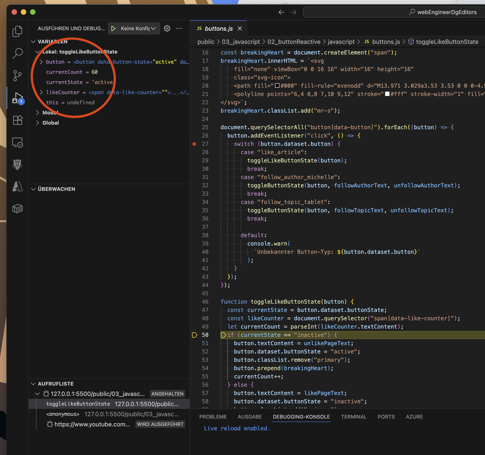

Debug JavaScript mit VS Code
Wenn dein Code nicht wie erwartet funktioniert, hast du zwei Debugging-Optionen: Browser (Chrome) oder VS Code. Der Vorteil beim VS Code Debugging ist, dass du Code korrigieren und sofort die Auswirkungen sehen kannst.
Zusätzliche Ressourcen
Eine grundlegende Anleitung findest du in der offiziellen VS Code Dokumentation. Falls das nicht reibungslos funktioniert, verwendet diese Anleitung zusätzlich den LiveServer und hat sich in Tests bewährt.
Debug Session starten mit VS Code
Vorbereitung
- Projekt öffnen: Öffne den Ordner
public/03_javascript/02_buttonReactivein VS Code
(alternativ ein beliebiges Projekt mit JavaScript und HTML) - LiveServer starten: Starte die
index.htmlmit deinem LiveServer - URL überprüfen: Du solltest die Seite über folgende URL sehen:
http://127.0.0.1:5500/public/03_javascript/03_buttonReactive/index.html
Debug-Verbindung einrichten
- Debug-Panel öffnen: Gehe zum "Debug"-Bereich in VS Code
- Befehlspalette öffnen:
- Mac:
Cmd + Shift + P - Windows/Linux:
Ctrl + Shift + P
- Mac:
- Befehl eingeben: Tippe
Debug: linkin die Befehlszeile - Debug-Link öffnen: Klicke auf das Ergebnis "Debug: Open Link" 
- URL eingeben: Kopiere die LiveServer-URL und füge sie ein

- Verbindung bestätigen: Der Browser sollte die Seite öffnen und in VS Code solltest du die "Aufrufliste" sehen

Breakpoints setzen
- JavaScript-Datei öffnen: Gehe zu einer JavaScript-Datei (z.B.
buttons.js) - Breakpoint setzen: Klicke am linken Rand der gewünschten Zeile
→ Ein roter Punkt wird angezeigt
- Code ausführen: Gehe zurück zur Webseite und führe eine Aktion aus (z.B. Button klicken)
- Debugging startet: Der Debugger stoppt an der markierten Stelle

Debug-Steuerung
- Debug-Toolbar: Du siehst eine verschiebbare Button-Leiste zur Debugging-Steuerung

- Step Over (
F8):- Drücke den ersten Button rechts vom Play-Symbol
- Führt die aktuelle Zeile aus und geht zur nächsten
- Step Into (
F7):- Wenn du wissen möchtest, was sich hinter einer Funktion wie
toggleLikeButtonState(button);verbirgt - Springt in die Methode hinein für detaillierte Analyse
- Wenn du wissen möchtest, was sich hinter einer Funktion wie
- Schritt-für-Schritt:
- F7 = Mehr ins Detail (Step Into)
- F8 = Überspringen (Step Over)
Variable inspizieren
- Werte anzeigen:
- Fahre mit der Maus über eine Variable und bleibe stehen
- Der Wert wird direkt angezeigt
- Zusätzlich gibt es oben links eine Übersicht aller Variablen 
- Werte ändern:
- Doppelklick auf eine Variable in der Übersicht
- Ändere den Wert und bestätige mit
Enter
- Simulation:
- Hilfreich zum Testen: "Wie würde sich der Code verhalten, wenn...?"
- Ändere Werte temporär zur Simulation verschiedener Szenarien
Weiterführende Informationen
Detaillierte Informationen findest du in der offiziellen VS Code Debugging-Dokumentation.
Tipps
- LiveServer erleichtert das Debugging erheblich
- Breakpoints können jederzeit gesetzt/entfernt werden
- Variablen-Werte können zur Laufzeit geändert werden
- Step Into vs. Step Over je nach gewünschtem Detailgrad verwenden